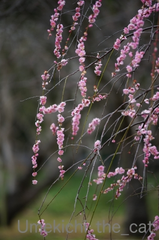
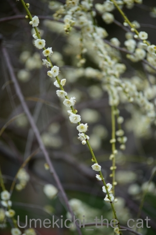
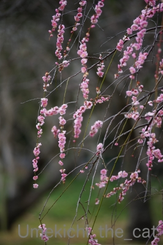
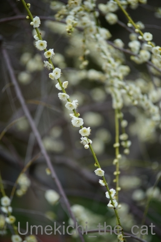

今日は、花 華 [梅吉]
梅吉＆梅の木写真。
再度モデルをお願いしてみました。
まずはニオイを確認。

目線が良いですねー(≧▽≦)
でももうちょっとポーズにキメが欲しいかな！
PC前の皆さんに向かってウィンク(^_－)☆
ぺろりんっ＾＾
ベストなポーズ、決まったぁ(๑˃̵ᴗ˂̵)و
華のある花、胡蝶蘭ともパチリ。
おっとが役員室フロアの廊下で廃棄寸前だったのをレスキューして来ましたw
終わりかけだったのでお花は切り花として
根の方は植え直して育ててみることにしました。
蘭系は難しいんですよね。
むかーし実家で同じことをしていたのですが
翌年花は咲いたのですが一輪だけだったというwww
我が家の場合どうなることやら、です。
 ↑ガブッと一押し↑
↑ガブッと一押し↑
先週末曇り空の中、近所の植物園に梅を見に行って来ました。
この植物園にもあったはず・・・と思っていたらやっぱりありました。
一つの木に紅白の花が咲く梅。
これは「東錦」という品種でした。
うちの盆栽もこうなるはずなんだけどなー。

紅白のしだれ梅。
まんずさく、のマンサクとボケ。
サンシュユとミツマタ。
クリスマスローズの群生。
カワヅザクラにアセビ。
カワヅザクラにメジロさんが！
サクラジロー？
曇り空だったせいもありますが植物園はびっくりするくらい人が少なかったです。
出歩いている人が少ないなと感じるこの頃。
やっぱり皆さん出控えているのかしら。
我が家は外出から戻るとなるべく家にウィルスを持ち込まないようまずは手洗いうがい。
コートを脱いだ後、服を脱いだ後指先の消毒。
スマホなど持ち歩いていたものの消毒。
靴や玄関の消毒、消毒、消毒・・・・・最後にもう一度手洗い。
落ち着くまで結構時間がかかります。
神経も使うしちょっと消毒疲れしてきたかも(ｰ ｰ;)
再度モデルをお願いしてみました。
まずはニオイを確認。
目線が良いですねー(≧▽≦)
でももうちょっとポーズにキメが欲しいかな！
PC前の皆さんに向かってウィンク(^_－)☆
ぺろりんっ＾＾
ベストなポーズ、決まったぁ(๑˃̵ᴗ˂̵)و
華のある花、胡蝶蘭ともパチリ。
おっとが役員室フロアの廊下で廃棄寸前だったのをレスキューして来ましたw
終わりかけだったのでお花は切り花として
根の方は植え直して育ててみることにしました。
蘭系は難しいんですよね。
むかーし実家で同じことをしていたのですが
翌年花は咲いたのですが一輪だけだったというwww
我が家の場合どうなることやら、です。
先週末曇り空の中、近所の植物園に梅を見に行って来ました。
この植物園にもあったはず・・・と思っていたらやっぱりありました。
一つの木に紅白の花が咲く梅。
これは「東錦」という品種でした。
うちの盆栽もこうなるはずなんだけどなー。

紅白のしだれ梅。
まんずさく、のマンサクとボケ。
サンシュユとミツマタ。
クリスマスローズの群生。
カワヅザクラにアセビ。
カワヅザクラにメジロさんが！
サクラジロー？
曇り空だったせいもありますが植物園はびっくりするくらい人が少なかったです。
出歩いている人が少ないなと感じるこの頃。
やっぱり皆さん出控えているのかしら。
我が家は外出から戻るとなるべく家にウィルスを持ち込まないようまずは手洗いうがい。
コートを脱いだ後、服を脱いだ後指先の消毒。
スマホなど持ち歩いていたものの消毒。
靴や玄関の消毒、消毒、消毒・・・・・最後にもう一度手洗い。
落ち着くまで結構時間がかかります。
神経も使うしちょっと消毒疲れしてきたかも(ｰ ｰ;)

カフェオレ色の梅吉

梅吉 2023年8月10日 永眠


梅吉と出会った譲渡会

犬猫の理由なき殺処分ゼロ
妄想広告
UMEKICHI 光

爆発的に早い！
時々攻撃的！
Thanks to Mr.Boss365
爆発的に早い！
時々攻撃的！
Thanks to Mr.Boss365

梅吉さんしっかりキメたポーズも良いけど、頭に生えてたりウィンクしてたりも良いなー。
by zombiekong (2020-02-20 00:49)
ウィンクからのぺろりんからのモデル立ちと、
最高に梅吉さんポーズが決まりましたね(^_-)-☆
もし蠟梅の香りをかいだらどうなるのだろう・・・
「東錦」は美しいですが梅吉さんの猫パンチにあいそう(笑)
by yamatonosuke (2020-02-20 01:26)
梅吉さんベロンかわいいにゃあ。
塗りにゃん大正解おめでとうございます^^
by ニコニコファイト (2020-02-20 06:51)
お利口さんにポーズとってくれてますね(*^-^*)
蘭は父が熱心に育てていましたが、光熱費が大変
だったみたいです。父が亡くなった後は徐々に全部
枯らしてしまい、蘭の温室は犬小屋になりました。
by mio (2020-02-20 07:43)
梅吉さん、やはり最後は決めてくれますね！
こちらは今日も雪がうっすらと積もってました。
梅が咲くのはまだまだですね。
by kou (2020-02-20 07:53)
梅吉さん♪見事なモデルっぷり♪
決まってますねぇ～(#^.^#)
by きぃ (2020-02-20 08:07)
上目づかいの目線も、ウィンクもベロリンもカワイイです。
しかし最後はしっかりキメポーズ。さすがです！
蘭は難しいですよねー。温度管理、水管理、かなーり大変。
がんばってくださーい。
紅白両方咲く梅、良いですよね。少し回復したら、梅見に行きたいです。
あ、そういうわけで、今日から復帰しました。
ご心配おかけしました。
by ChatBleu (2020-02-20 09:55)
梅吉さんチョコッと座っていますね！
手の消毒は玄関と部屋の2カ所において玄関で忘れても部屋で出来るようにしています。
by ma2ma2 (2020-02-20 10:38)
梅吉流生け花に感動！ 思わず、ガブっと！
皆さま、お元気そうでなによりです。
by 小松達也 (2020-02-20 11:50)
梅吉さんお花をガジガジしないのが賢い！
おすましポーズのお尻尾がきゅっと巻き付いているのがいいですね(#^^#)
実家でシンビジウムは放っておいてもよく咲きましたが、胡蝶蘭は花数が少なくお店で見るようなゴージャスな姿にはなりませんでした。
水、肥料、日当たり、温度、全て気をつかいますもんね～。
植物園も空いていましたか！
相方が大阪城公園の梅林にも人影まばらだったと言ってました。
消毒バッチリですね！！
父もそうでしたが相方も男性に多い無頓着タイプ。
帰宅して手洗いする前にあちこち触るので、玄関にコート掛けとカバン用の椅子を置き、強制的に洗面所へ直行してもらうようにしました^^;
家の中に可能な限り持ち込みたくないですもんね。
コメントいただいたように、揃って隔離されたらこてつが困るというのが最大の心配事。いい加減消毒にも疲れてきましたが踏ん張りどころですね^^
by ゆきち (2020-02-20 12:53)
すばらしいっ""ﾊ(＾▽＾*) ﾊﾟﾁﾊﾟﾁ♪
いろんなポーズもばっちり決まっていいモデルさん❤
2枚目の上目遣いとウインクが好きですね(≧∀≦)
胡蝶蘭、私も好きです(*＾-ﾟ)v 華やかですよね♪
梅！！梅繋がりでこれは見に行かなきゃですよね！
庭の紅梅はもう盛りを過ぎてしまっている感じで
白梅がそろそろ見ごろかなぁと思っています。
いつも撮影時期を逃しちゃうんですよね(〃￣ω￣〃ゞ
コロナ騒ぎでいろいろ気を使いますよね。
電車で咳したらイヤな顔されたりするし、マスクは
必須ですね＾＾
by カトリーヌ (2020-02-20 13:26)
梅吉＆梅の木～ ピッタシなコラボだニャ。
ウインク 片目のジャックみたいな（ﾟ□ﾟ）
サクラジローもいいね。
by 英ちゃん (2020-02-20 14:00)
梅吉さんのベストポーズ、格好良いです。
揃えたあんよに、尾っぽが巻きついて、
素敵です。
良いモデルさんです。
ご褒美は何でしたか？（笑）
消毒、凄いですね。
我が家、夫は帰宅するとシャワーを浴びます。
私は手洗いくらい。
ちぃさんと比べるとダメですね〜（笑）
スマホなど消毒したことないです。
梅吉さんのために疲れてはいけませんね
（どの口が言うと自分にツッコミを入れてます）
『雪苺娘』見当たりません（笑）
根気よく探します。
by kiki (2020-02-20 16:05)
梅吉さん＆梅の木 からの～ウィンクショットは絶妙ですね♪
キメるときはきっちりキメる漢だぜですな。
そういえば、JR神戸線の車内はあまりマスクしている人だらけという
印象がないです。もしかしたら、手に入らないのでしたくてもできない？
日曜日、相方君と出かけた昼のみできる居酒屋はいつも通りの賑わいでしたが
土曜日に梅を見に行った神社は私ともう一組しかいませんでした。
植物園、春の草花がいっぱい咲いているのですね♪
お花の名前がわからないときはGooglePhotoの検索ボタンで探すと
なかなかの確率で判明します。AIぶらぼーです。
サクラジロー、ウメジロー(^^ うちの界隈には鳩とカラスくらいしか鳥がいないっす。
by marimo (2020-02-20 16:08)
ウインク写真もいいけど、5枚目の写真が最高です～！
両手もちゃんと揃ってて、礼儀正しい感じ。
コロナ騒ぎで、どこも人出が少ないようですね。
ほんまにプロ野球、開幕できるのかな～というのが目下の心配ごとです。
我が家はアルコールとかないんで、とりあえずうがいと手洗いだけですわ～。
by よーちゃん (2020-02-20 17:59)
梅吉くん、ばっちり決まってる！
しかもウインクまでするなんて〜〜〜
にくいぞ、このこのーー^^
マンサクとボケ、わたしも好きな花なんですよね^^
でもね、マンサクは本物は見たことないとおもう。六花亭のパッケージでしか見てない？(笑)
紅白の花が咲く梅、綺麗ですよね^^
うちの近所の神社では、紅白の花が咲く桃があるんですよー。
なので、３月になったらチェックしておこうっと思ってるわ〜〜
by リュカ (2020-02-20 19:06)
ベストショット、両手揃えてしっぽを巻いてカメラ目線、素晴らしいですね！ ^^)
by yes_hama (2020-02-20 21:26)
梅吉君のウインクにやられました～
可愛すぎる（＞＜）
スラっと足も長くて、カメラ目線の一枚も素敵♪
「アホっさ」大爆笑で我が家でもそう呼ぶことになりました
先ほど早速やらかして、今は疲れたのか横で居眠りしてます（苦笑）
by 藤並 香衣 (2020-02-20 23:14)
ベストなポーズ カッコイイ
ちゃんと分かってるんですねぇ
by (。・_・。)２ｋ (2020-02-21 12:59)
こんにちは。
「ニオイを確認」梅吉君、土の匂い？が気になるみたいです（笑）
上目使いの目線はナイスです。小生も常に狙っている写真です。
梅吉君？ウィンク？ナンパしてますね（笑）ベストなポーズ、キマまってます。
花粉症には危険ですが、胡蝶蘭いいですね。
蘭系、難しいですが「適度に風通し」の良いとこで育てて下さい。来年も咲きます。
「紅白の花が咲く梅」面白いですね。美味しそうに見えます（笑）
都内も人が少ない場所が多く目立ちます。
不安を解消する報道が必要かな。後は自己防衛あるのみです。
帰宅時の行動、ちぃさんとほぼ同じです（笑）！？(=^･ｪ･^=)
by Boss365 (2020-02-21 13:16)
こんにちは。
体調は大丈夫です。明日は猫の日？なので、急遽ブログアップ！！
コメント欄を開く予定です。よろしくです。
ご心配ありがとうございます！？(=^･ｪ･^=)
by Boss365 (2020-02-21 20:33)
おぉ、梅吉さんのアタマから梅が生えてる(@@;)
どれも、いい構図、いい表情ですよ〜♪
梅吉さんのモデルぶりは、まさにプロフェッショにゃる♡
by のらん (2020-02-22 07:46)
きゃっ、ウィンクの写真に♡を射ぬかれましたよー
by liang (2020-02-22 17:18)
梅吉さん、いろいろなポーズが可愛い～！
ウィンクに、ぺろりんに、決めポーズ！さっすがですね^^
可愛いお花がいろいろ～もう春になりますね。
花粉症はしょうがないけど、コロナがねえ…
人混みに出た後は消毒が大変ですね。
にゃんこに移らないことは救いだけど^^
by sana (2020-02-23 00:36)